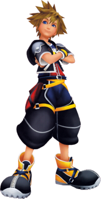
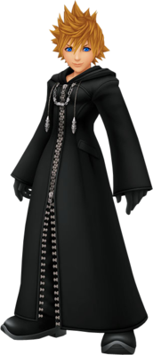
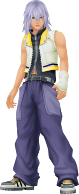

<<<<<<< HEAD
<<<<<<< HEAD
>>>>>>> fbf486ec6556a3f8de159659e9d230a29b0e0b79
=======
>>>>>>> fbf486ec6556a3f8de159659e9d230a29b0e0b79
=======
>>>>>>> fbf486ec6556a3f8de159659e9d230a29b0e0b79
What is Kingdom Hearts?
Kingdom Hearts is a series of action role-playing games developed and published by Square Enix (originally by Square). It is a collaboration between Square Enix and Disney Interactive Studios, and is under the direction of Tetsuya Nomura, a longtime Square Enix character designer. Kingdom Hearts is a crossover of various Disney settings based in a universe made specifically for the series. The series centers on the main character Sora and his search for his friends and encounters with Disney, Final Fantasy and The World Ends With You characters on their worlds. The series consists of seven games across multiple video game consoles, and future titles are planned. Most of the games in the series have been both critically acclaimed and commercially successful, though each title has seen varying levels of success. As of October 2013, the Kingdom Hearts series has sold over 20 million copies worldwide. A wide variety of related merchandise has been released along with the games, including soundtracks, figurines, companion books, novels, and manga series.
Sora

Sora is the main protagonist of the Kingdom Hearts series. He lives on the Destiny Islands with his best friends Riku and Kairi, and all three of them dream of venturing from Destiny Islands to find out what lies beyond. His home was consumed by darkness, sending him on a journey to many worlds across the Realm of Light. An upbeat youth, he travels with his new friends Goofy and Donald Duck in search of his missing friends, and uses his newly acquired weapon, the Keyblade, to put an end to the threats that destroyed his world.
Roxas

Roxas is the Nobody of Sora and was Rank XIII within the original Organization XIII, born when Sora took his own heart to restore Kairi's. Although Sora's heart was soon restored, Roxas continued to endure and exist, oblivious of Sora's existence for most of his life. He has the ability to use the Keyblade, and wields light, using it to direct rays that strike opponents with great power. He commands the Samurai Nobodies.
Riku

Riku is one of the main characters in the Kingdom Hearts series. Riku lives on Destiny Islands. He is the best friend of Sora and Kairi. Riku is five years old during Kingdom Hearts Birth by Sleep, fifteen during the events of Kingdom Hearts and Kingdom Hearts: Chain of Memories, and sixteen during the events of Kingdom Hearts 358/2 Days, Kingdom Hearts II and Kingdom Hearts 3D: Dream Drop Distance. Riku's name is derived from the Japanese word for "Land".